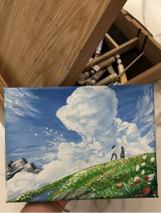
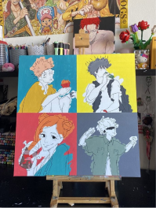
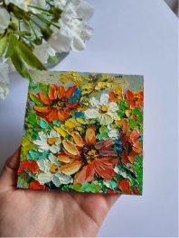

Inicio
Bienvenido a ExpresArt, tu galería de arte en línea. En esta plataforma, podrás explorar una amplia gama de obras de arte, desde pinturas hasta fotografías. Te invitamos a registrarte para disfrutar de todas las características y participar en nuestra comunidad artística.
Descubre nuevas exposiciones, conoce a los artistas y mantente al tanto de los eventos que tenemos preparados para ti.
Disfruta tu galeria web
Entra y diviertete!!
Galería
Explora nuestra extensa colección de obras de arte. Puedes navegar por las diferentes categorías para encontrar piezas que te inspiren. Cada obra está acompañada de una descripción detallada y, en muchos casos, una historia sobre el artista y el contexto de la obra.
Para los artistas, ofrecemos un espacio para que muestres tus propias creaciones y las compartas con el mundo. Si tienes una pieza que te gustaría que otros vean, ¡anímate a subirla!



Categorías
Navega a través de nuestras categorías para encontrar obras de arte agrupadas por estilo, técnica o tema. Las categorías incluyen:
Pintura
Explora una colección de obras de arte pintadas en diversos estilos y técnicas.
Dibujos
Descubre una variedad de dibujos en diferentes medios y estilos.
Fotografía
Explora obras fotográficas capturadas por talentosos artistas.
Artistas
Conoce a los talentosos artistas que contribuyen a nuestra galería. Cada perfil incluye una biografía del artista, una muestra de sus obras y sus exposiciones recientes. Puedes buscar artistas por nombre, nacionalidad o técnica.
Si eres un artista, puedes registrarte y crear tu propio perfil para compartir tu trabajo y conectar con otros creativos.
Exhibiciones
Descubre nuestras exhibiciones actuales y futuras. Las exhibiciones incluyen una selección curada de obras que siguen un tema o concepto específico. Cada exhibición tiene su propia página con información sobre las obras, los artistas y el evento en sí.
Participa en eventos en vivo y exposiciones virtuales, y mantente al tanto de nuestras próximas exhibiciones para no perderte ninguna oportunidad de ver arte en su máxima expresión.
Configuración
Administra tu perfil y preferencias desde esta sección. Puedes actualizar tu información personal, cambiar tu contraseña y ajustar tus preferencias de notificación.
Además, tienes la opción de gestionar tu cuenta, revisar tus actividades recientes y ajustar las configuraciones de privacidad para mantener el control sobre tu información.